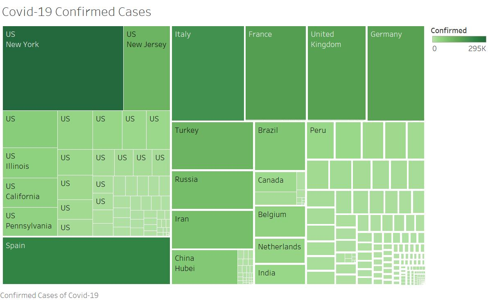
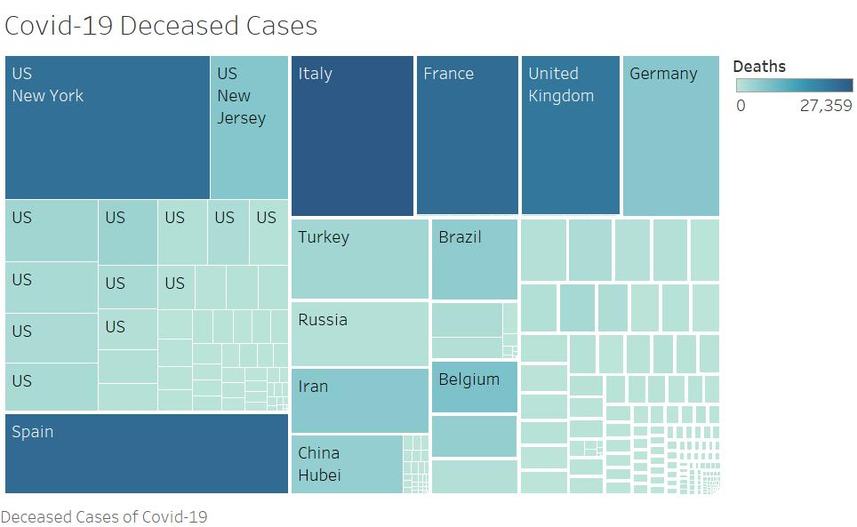

The plots shows total number of confirmed and death cases in Top 10 regions starting from January 2019 towards mid-April of 2020.
Original dataset has been used for this visualization where Country/Region, Deaths and Date columns have been used.
Confirmed coronavirus cases in the US increased significantly in the third week of March as testing was made more rapid and overtook China’s on 26 March making the US the world’s most affected country by coronavirus currently, by number of cases.
The US COVID-19 cases earlier crossed South Korean cases on 19 March, moving beyond 33,500 on 23 March, and surging to more than 240,000 on 02 April, while the death toll too increased sharply past 5,800.
Community spread and delayed testing has been a major concern to Americans as enough test kits are not available across states, while shortage of ventilators continues to result in increased deaths.
Coronavirus continues to be severe in Italy, making it the most-affected in Europe as well as outside Asia. Italy has witnessed the highest number of deaths due to COVID-19 in the world. Travel to Italy and Italians travelling to other countries during the outbreak has been traced to have caused COVID-19 spread.
Spain overtook South Korea in the number of coronavirus cases in the third week of March and China at the end of March. Since the confirmation of first coronavirus case in Spain on 01 February, the Spanish COVID-19 nCoV-infected cases got closer to 1,000 in early hours of 09 March and rose sharply to more than 112,000 on 02 April. A minister in Spain contracted coronavirus, while Princess Maria Teresa died from coronavirus marking the first royal death due to COVID-19.
Spain is currently the second most-affected European country with coronavirus. Spanish coronavirus death toll too has increased sharply to cross 10,300. A nation-wide lock-down has been announced affecting millions of its residents.
Coronavirus cases in Germany, which borders France and Switzerland, have crossed 84,700 overtaking the cases in China. Similar to its neighbour France, Germany too banned public events involving huge crowds in order to prevent spread. Trade fair, The Hannover Messe, has been postponed due to the coronavirus outbreak situation.
China witnessed more than 3,000 deaths and approximately 74% of the global coronavirus cases as of 09 March, which quickly came down to 58% by 13 March and to 40% by 18 March as the number of cases in rest of the world surged and Europe became the new epicentre. Within a week, coronavirus cases in the rest of the world belittled China’s. By the end of March, Chinese coronavirus cases accounted for just 10% of the global cases. Hubei is the most-affected province within China and Wuhan, the capital city of Hubei, is the city affected worst by the coronavirus. Hubei has witnessed more than 67,000 coronavirus-positive cases and continues to report deaths, although at a slower rate than before.
The UK coronavirus cases surged significantly in the third and fourth weeks of March making it one of the top ten countries with coronavirus.
Also, following the first confirmed coronavirus infection on 10 March, the number of coronavirus cases in Turkey increased sharply making it one of the top ten countries affected by COVID-19, in less than four weeks.
Iran, Switzerland and France are among the top 10 infected countries too.